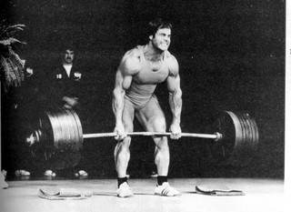
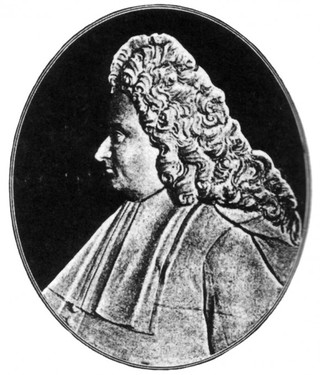

Resulta que cuando hacemos un esfuerzo muscular intenso de corta duración, tendemos a apoyarnos en la acción de contener el aire en los pulmones, en lugar de expulsarlo (espirar). Muchos usuarios de las salas de musculación y deportistas recurren a esta maniobra cuando mueven pesos de cierta magnitud. Desde CuerpoSapiens nos hemos propuesto desmontar su [...]
Entradas relacionadas
Robot aprende a darle la vuelta a la tortilla
Por maikelnai | 26/07/2010 @ 23:31 | Ingeniería | 8 Comentarios
¿Ganaría una mujer neandertal al campeón mundial de pulsos?
Por aberron | 15/11/2011 @ 21:16 | Biología, Divulgación | 30 Comentarios
Paso por boxes en el aire
Por IdeaSecundaria | 10/10/2011 @ 09:30 | Ingeniería | 10 Comentarios
Resulta que cuando hacemos un esfuerzo muscular intenso de corta duración, tendemos a apoyarnos en la acción de contener el aire en los pulmones, en lugar de expulsarlo (espirar). Muchos usuarios de las salas de musculación y deportistas recurren a esta maniobra cuando mueven pesos de cierta magnitud. Desde CuerpoSapiens nos hemos propuesto desmontar su utilidad en el entrenamiento de la fuerza, con objeto de resaltar su riesgo cardiovascular.

Franco Columbu realizando un levantamiento (peso muerto)
Pues no, Valsalva no es un compañero de entrenamiento, cuando se trata de mover el hierro hasta quedar sin aliento. En realidad, Antonio Maria Valsalva (imagen 2) fue un médico italiano nacido en el siglo XVII, que describió y dio nombre a una maniobra relacionada con la dinámica de dicho aliento. Así, la maniobra de Valsalva consiste en expulsar el aire forzadamente (espirar), pero tapando la nariz y cerrando la boca, al tiempo que se cierra la glotis. Estas acciones aumentan la presión en las trompas de Eustaquio. Si las trompas están permeables, el aire entrará de manera forzada en el oído medio.
Curiosamente, también determina una serie de sucesos musculares y cardiovasculares que tienen su importancia cuando suceden entrenando la fuerza. Para hacerse una idea el lector, se identifica fácilmente al usuario de un gimnasio que se apoya en dicha maniobra, por la “cara de inflar globos” al levantar pesos. Podemos encontrar entrenadores o técnicos de Fitness que desaconsejen realizar dicha maniobra, guiados por criterios de salud. Por razones de rendimiento deportivo, otros encuentran adecuada su aplicación.

Antonio Maria Valsalva
La maniobra de Valsalva al desnudo:
Al espirar contra la glotis cerrada; aumenta la presión intratorácica, lo que afecta a la presión arterial (PA) que disminuye, debido a que se reduce el retorno venoso (RV).
Podemos decir que, la presión arterial aumenta al comenzar nuestro esfuerzo con esta maniobra, por el aumento de presión intratorácica, sumado a la presión aórtica. Sin embargo, a los pocos segundos desciende, porque la gran presión dentro del tórax (presión intratorácica) llega a comprimir las venas. Ésto provoca que disminuya el retorno venoso y el gasto cardíaco (GC). La disminución de la PA es detectada entonces por unas terminaciones nerviosas, los barorreceptores, que inhiben su actividad, lo que reduce el tono vagal y aumenta el tono simpático1 del corazón y vasos periféricos. Como resultado, se induce la elevación de la frecuencia cardíaca (FC) (taquicardia), el aumento de la fuerza de contracción del corazón y vasoconstricción de los vasos periféricos. Todo ello contribuye al aumento el GC.
1) El sistema nervioso autónomo se compone de los sistemas simpático y parasimpático. Las acciones de ambos sistemas son opuestas entre sí, pero actúan en equilibrio conjuntamente. El nervio Vago inerva al corazón y el aumento del tono vagal, o actividad parasimpática de dicho nervio, reduce al FC. El aumento del tono simpático se refiere a la estimulación de la inervación del corazón que eleva su FC, e implica la reducción del tono vagal. En ejercicio físico predomina la estimulación simpática con aumento de activación cardíaca, de la PA y vasoconstricción en músculos no activos, en reposo (recuperación) predomina la actividad parasimpática, con los efectos opuestos.
Al terminar la maniobra y abrir la glotis, regresa a la normalidad la presión intratorácica. Lo mismo ocurre con el GC, aunque continúe la vasoconstricción de los vasos periféricos. Al incrementarse la PA de nuevo, la respuesta de los barorreceptores estimula la actividad del nervio Vago e inhibe la actividad simpática, lo que produce disminución de la FC (bradicardia) y vasodilatación de los vasos periféricos. De esa manera regresa la presión a los valores normales2.
2) Los cambios en la PA producen una respuesta de los barorreceptores, destinada a recuperar sus valores normales. Este sistema de regulación se conoce como “reflejo barorreceptor”.
Aburrido, ¿no?, pues esto puede observarlo el lector cuando tose. También ocurre al estornudar, al trata de abrir un bote con tapa de rosca (con más hambre que fuerza) o en alguna que otra necesidad fisiológica que realizan hasta los toreros, por muy valientes que parezcan.
A parte de las situaciones citadas, esta maniobra se empleó en su tiempo para sacar cuerpos extraños desde el oído y para tratar la hipoacusia. Hoy su utilidad es variada, en medicina, por ejemplo, puede tener función diagnóstica o apoyar las acciones de esfuerzo o “pujo” en un parto. También es muy importante en la inmersión en el buceo, para igualar la presión de nuestros oídos en relación a un aumento paulatino de la presión exterior del agua, tratando de evitar un posible barotrauma.
¿Por qué evitarla al entrenar?
Razonando su función estabilizadora.
Como ya dijimos, la “maniobra de Valsalva es recurso común en el entrenamiento de fuerza. Se suele decir que es un recurso instintivo. Ésto posiblemente sea cierto en ejercicios estáticos, donde una fuerte contracción isométrica dificulte controlar dicha maniobra respiratoria. Es probable que se realice involuntariamente como apoyo a ejercicios de levantamientos de cargas pesadas. De esta forma, la tensión de los músculos del abdomen, el diafragma y músculos respiratorios pueden dar mayor soporte a la espalda. El argumento a su favor sostiene que su acción puede reducir la carga soportada por los discos intervertebrales cuando se levantan pesos considerables. Sin embargo, para mover pesos en posiciones que no comprometen a la espalda, dicha maniobra perdería su función protectora. Un ejemplo de esto sería el conocido “press de banca” (imagen 3). Aunque, en ocasiones se argumente que la mayor rigidez de tórax pudiera estabilizar a los músculos anclados al tronco, no he hallado evidencias de ello. Tampoco se evidencia una mayor aplicación de fuerza por apoyarse en dicha acción. Evitar voluntariamente la aparición de al maniobra de Valsalva es perfectamente posible y podría ser conveniente para un modelo de entrenamiento saludable, como trataré de explicar.
Por necesidades de rigor científico, el texto bajo estas líneas estará sembrado de citas bibliográficas.
Pues bien, Ahonen (2001: 271-272), recomienda respirar de forma entrecortada, en lugar de retener la respiración en ejercicios isométricos. En los ejercicios de fuerza dinámicos, recomienda expulsar el aire al levantar el peso (fase concéntrica) e inspirar cuando lo bajamos (fase excéntrica del movimiento). McGill (2003: 4) defiende que dicho patrón puede ser adecuado para deportistas de alto rendimiento competitivo cuando se asocia a la maniobra de Valsalva, pero no para mejora de la condición física saludable. En ejercicios de fuerza, para generar una mayor estabilidad del raquis, no se debería fijar ninguna pauta de respiración. Ésta debería sucederse de forma continuada. Esto último aseguraría la adecuada activación de la musculatura abdominal y estabilidad de la columna vertebral, en especial en la región lumbar.
A este respecto, Hartman (2007: 49), considera que la presión intraabdominal no se genera necesariamente por la maniobra de Valsalva, aunque deportistas de la alta competición la empleen. Los músculos abdominales y el diafragma se contraen de forma refleja, aún respirando, pero sin elevar la presión dentro del tórax. Por tanto, la incorporación del fenómeno Valsalva no resulta una condición sine qua non para la estabilidad de la columna vertebral durante el levantamiento de pesos. En este sentido, López Miñarro (2002: 133) y López Chicharro (2007: 15) recomiendan seguir un patrón normal de respiración en los diferentes ejercicios de fuerza a realizar, además de ejecutarlos con movimientos amplios, rítmicos y más o menos lentos.
Razonando su riesgo cardiovascular.
El riesgo cardiovascular de la maniobra de Valsalva radica principalmente en su relación especial con la presión arterial elevada instantáneamente. Varias condiciones del entrenamiento de fuerza conducen a una respuesta hipertensiva elevada, especialmente en principiantes. Veremos a continuación a qué condiciones nos referimos.
En entrenamiento de fuerza, cuando tratamos mover una carga que excede a nuestras posibilidades, el ejercicio se considera isométrico o estático. Por el contrario, cuando se aprecia trabajo externo (el peso se desplaza) el ejercicio se considera dinámico. El esfuerzo isométrico eleva la presión arterial por causa de la compresión que ejerce la tensión de los músculos sobre su propia circulación. Ésta aumenta en función del grado de tensión y cuando la intensidad del esfuerzo está por encima del 70% de la fuerza máxima voluntaria, la circulación en el músculo activo es prácticamente nula (Barbany, 2010: 90).
Por efecto de esta compresión, aumenta el retorno venoso. La frecuencia cardíaca y la fuerza de contracción del corazón también aumentan, por efecto reflejo barorreceptor. Todo esto lleva a una elevación de la presión arterial. En el ejercicio estático, el corazón no logra bombear mucha sangre, pero debe luchar contra la resistencia periférica que eleva la PA (diastólica y sistólica). Esta situación provoca una hipertrofia cardíaca con aumento del grosor de las paredes del miocardio (se hace más fuerte). Sin embargo, no varían sustancialmente ni el tamaño de las cavidades, ni la frecuencia cardíaca de reposo. Las mejoras musculares se limitan a la posición articular entrenada, no a todo el recorrido de la articulación, lo que obligaría a entrenar en varios ángulos para su mayor eficiencia. Estos efectos que no tienen gran relevancia para la condición física general, pero para la salud cardiovascular suponen una sobrecarga innecesaria. Es un caso particular de corazón de atleta: un mayor grado de hipertrofia, pero sin un mayor volumen de sus cavidades ventriculares apreciable, o lo que es lo mismo, un corazón más fuerte, pero no más grande. Sin embargo, no hay evidencia científica que justifique el entrenamiento isométrico para la mejora de la fuerza ni la hipertrofia.
La maniobra de Valsalva puede verse acentuada en ejercicios isométricos máximos (estáticos), por las razones expuestas. También en ejercicios de fuerza dinámicos, cuando las cargas elevadas son grandes, eventualmente se pueden afrontan breves instantes de isometría. En mi opinión, esto sucede de manera frecuente a usuarios de las salas que persiguen objetivos de hipertrofia. Esto lo explico por el hecho de que en la elección de los pesos con los que entrenan, no siguen los criterios de entrenamiento adecuados a la hipertrofia. El posible abuso de las series que persiguen el fallo muscular en sujetos principiantes, puede condicionar que los entrenamientos se sitúen en el marco del fenómeno de Valsalva y de los esfuerzos isométricos ante cargas muy elevadas (Nacleiro, 2011: 98).
De acuerdo con lo anteriormente dicho, el American College of Sports Medicine (ACSM) (2007: 212-213) recomienda realizar ejercicios de fuerza dinámicos con pesos que permitan realizar entre 8 y 12 repeticiones. Además no se debe alcanzar la fatiga completa, es decir, se han de realizar las series sin llegar al fallo muscular. Recomienda evitar la aparición de la maniobra de Valsalva en adultos aparentemente sanos. El ACSM (2011: 1343-1344) recomienda para principiantes intensidades de entre el 60% y el 70% del peso máximo posible en una sola repetición (1RM). Los sujetos avanzados deberían trabajar hasta el 80% de 1RM. Las personas muy desentrenadas o con debilidad muscular deben iniciarse con cargas del 40-50% de 1RM Los adultos mayores deberían trabajar la fuerza en un rango entre el 20% y el 50% de 1RM.
Rizando el rizo a lo anteriormente dicho, podemos añadir que se da un mayor flujo de sangre al cerebro por realizar el ejercicio tumbado. Es aún más considerable este efecto cuando está la cabeza en un plano inferior al resto del cuerpo, como por ejemplo, en los ejercicios de pecho realizados en bancos declinados. En estas posiciones, la elevación de la PA puede incrementarse localmente por un efecto superpuesto de mayor flujo al cerebro, de la maniobra de Valsalva y de los momentos de isometría. Las posibles complicaciones de la suma estos factores se podrían relacionar con problemas cerebrovasculares o la posibilidad de sufrir una retinopatía hipertensiva. Por otro lado, es importante mencionar que las personas diabéticas también deberían evitar estos esfuerzos en relación con una posible retinopatía diabética.
Según la evidencia, los deportistas de halterofilia parecen desarrollar una mayor tolerancia a las elevaciones de presión arterial en ejercicios de fuerza con cargas elevadas, con una respuesta hipertensiva más atenuada. No obstante, la hipertensión en deportistas halterófilos y culturistas, podría deberse a factores como la sobrecarga de entrenamiento, el consumo de esteroides y el incremento notable de su masa muscular, López Chicharro (1995: 145). El entrenamiento de fuerza no parece tener relevancia para la prevención de problemas cardiovasculares. Las cifras de mejora de la presión arterial deben rondar el 5-9% para la presión sistólica de reposo (PSR) cuando se relaciona con enfermedad coronaria y del 8-14% si se relaciona con el infarto. La evidencia al respecto nos señala que las mejoras son del orden del 2% para la PSR, ACSM (2007: 538).
Halterofilia - Sultan Rakhmanov
Hipertensos con orden de alejamiento a Valsalva
Nos hemos referido hasta ahora a adultos, en apariencia, saludables. Pero esta situación de entrenamiento podría condicionar problemas cardiovasculares en el caso de que el sujeto presente riesgo de padecer hipertensión, sea hipertenso o padezca alguna enfermedad cardíaca. Por ello, estas personas, aún cuando sean deportistas, deben evitar la maniobra de Valsalva en sus entrenamientos de fuerza. Tampoco parece indicado en estos casos el ejercicio isométrico, sobre todo en asociación con la maniobra citada. El ACSM (2007, 254-255) no recomienda ejercicios de contrarresistencia como forma prioritaria de ejercicio en hipertensos. Los entrenamientos de fuerza en circuitos son los únicos ejercicios con cargas que se muestran eficaces para reducir la hipertensión. Deben evitarse los ejercicios isométricos, con pesos muy elevados y se desaconseja la maniobra de Valsalva.
Es también conveniente tener en cuenta, que la presión arterial suele presentar mayores variaciones en ejercicios realizados con los brazos, si lo comparamos con los que incorporan a las piernas. Esto se explica por una mayor resistencia al paso de la sangre (flujo) cuando se activan tan solo grupos musculares pequeños. Sería muy recomendable que los hipertensos incluyeran en sus entrenamientos, ejercicios en los que participen las piernas.
Jalón en polea para el músculo triceps
Conclusión
Si queremos minimizar los riesgos, nuestro entrenamiento debería guiarse por principios de seguridad. Por el contrario, abordar el entrenamiento de fuerza condicionados por modelos de entrenamiento diseñados para atletas o culturistas de alto nivel competitivo es, en mi opinión, un desatino. Posiblemente, sin los objetivos, vigilancia técnica, planificación y control riguroso de dichos deportistas, no se pueda garantizar un progreso adecuado y seguro del entrenamiento. En opinión de los expertos, las personas con riesgo de hipertensión y los hipertensos deben evitar la maniobra de Valsalva y ejercicios de fuerza isométricos.
Por otro lado, los deportistas de alto nivel ponen su énfasis en los resultados competitivos, aunque eviten en lo posible la lesión y se adhieran a ciertos hábitos saludables. Máximo rendimiento y éxito deportivo son objetivos que enmarcan un modelo en que, no necesariamente se prioriza la salud. Se debe tener en cuenta que al seguir algunas de sus pautas de desarrollo muscular, específico al uso competitivo, podemos ponernos en situaciones de riesgo para la salud (lesión del aparato locomotor, problemas metabólicos y patologías cardiovasculares).
————————–
Este artículo participa en los Premios Nikola Tesla de divulgación científica y nos lo envía Francisco Canales es licenciado en Educación Física y Maestro de Educación Infantil. Se formó como Entrenador Nacional de Atletismo en el INEF de Madrid, donde también se especializó en expresión corporal y psicomotricidad infantil. Compitió como atleta de velocidad en 60 y 100 metros lisos y fue practicante de Judo y Kung-Fú. Escéptico y aficionado a la divulgación científica. Defiende y divulga la actividad física saludable basada en la evidencia, frente a sus usos inadecuados, en CuerpoSapiens y tantos medios como alcanza.
—————————
Bibliografía
Ahonen, Jarmo y otros. (2001) “Kinesionogía y anatomía aplicada al ejercicio físico”. 2ª edición. Paidotribo, Barcelona.
American College of Sports Medicine (ACSM). (2007). “Manual ACSM para la valoración y prescripción del ejercicio”. Paidotribo, Barcelona.
American College of Sports Medicine (ACSM). (2011) “Quantity and Quality of Exercise for Developing and Maintaining Cardiorespiratory, Musculoskeletal, and Neuromotor Fitness in Apparently Healthy Adults: Guidance for Prescribing Exercise”. Medicine & Science in Sports & Exercise: July 2011 – Volume 43 – Issue 7 – pp 1334-1359 Special Communications: Position Stand. [en línea - en inglés] [consultado el 29-02-2012]
Barbany, J. (2010) “Fisiología del ejercicio físico y del entrenamiento”. Paidotribo, Barcelona.
Boraita Pérez A, et al. (2000) “Guías de práctica clínica de la Sociedad Española de Cardiología sobre la actividad física en el cardiópata”. Boraita Rev Esp Cardiol 2000 , 53, (5): 684-726 [en línea] [consultado el 19-02-2012]
- Enciclopedia Médica A.D.A.M. [Internet]. Atlanta (GA): A.D.A.M., Inc.; ©2012:
-Barotrauma; [actualizado 9-05-2011; consultado 19-02-2012 ]; [aprox. 3 p.]. Disponible en: http://www.nlm.nih.gov/medlineplus/spanish/ency/article/001064.htm
-Hipoacusia; [actualizado 31 mayo 2011; consultado 19-02-2012 ]; [aprox. 3 p.]. Disponible en: http://www.nlm.nih.gov/medlineplus/spanish/ency/article/003044.htm.
-Retinopatía diabética; [actualizado 6 de octubre de 2010; consultado el 21-02-2012]; [apropx.3 p.] Disponible en:
http://www.nlm.nih.gov/medlineplus/spanish/ency/article/000999.htm
-Retinopatía hipertensiva; [actualizado 31 de agosto de 2010; consultado el 21-02-2012]; [apropx.3 p.] Disponible en:
http://www.nlm.nih.gov/medlineplus/spanish/ency/article/000999.htm
García P, Daniela y GARCIA B, Cristián. “Vasalva mucho más que una maniobra: Antonio María Valsalva (1666-1723)”. Rev. méd. Chile [en línea]. 2006, vol.134, n.8 [consultado 14-02-2012], pp. 1065-1068. ISSN 0034-9887. Disponible en:
http://www.scielo.cl/scielo.php?script=sci_arttext&pid=S0034-98872006000800018&lng=es&nrm=iso.
Hartman, E. (2007). Biomecánica de los ejercicios de fuerza, en Baechle, T. y Earle, R. (eds.) “Principios del entrenamiento de la fuerza y del acondicionamiento físico”, capítulo 3. Médica Panamericana, Buenos Aires; Madrid.
Jiménez Gutiérrez, A. (2006). “Entrenamiento de fuerza y salud: Efectos positivos de los cambios producidos por el entrenamiento de fuerza sobre la salud”. G-SE Standar. [en línea] [consultado el 25-02-2012] Disponible en: http://www.g-se.com/pid/746/
Nacleiro Ayllón, F. (2011). Entrenamiento de fuerza y prescripción del ejercicio, en Jiménez Gutiérrez, A. “Entrenador Personal. Bases, fundamentos y aplicaciones”, pp: 87-133. Inde, Barcelona.
López Chicharro, J. (2007). “Fisiología clínica del ejercicio”. Médica Panamericana, Buenos Aires; Madrid.
López Chicharro, J. y Fernández Vaquero, A. (1995). “Fisiología del ejercicio”. Editorial Médica Panamericana, S. A.
López Miñarro, P. A. “Ejercicios desaconsejados en la actividad física. Detección y alternativas”. Inde, Barcelona, 2000.
McGill, S. M. “Enhancing Low-back Health through Stabilization Exercise”. ACE Certified News. February/March 2003, Páginas 3 a 6 [en línea] [Consultado el 15-02-2012] Disponible en: en: http://www.acefitness.org/pdfs/LowBackStabilization.pdf
SANCHEZ, Isabel A. Entrenamiento de la fuerza muscular como coadyuvante en la disminución del riesgo cardiovascular: una revisión sistemática. Rev. Colom. Cardiol.[en línea]. 2009, vol.16, n.6 [consultado 20-02-2012], pp. 239-248 . Disponible en: [http://www.scielo.org.co/scielo.php?script=sci_arttext&pid=S0120-56332009000600003&lng=es&nrm=iso ].
Para Saber más
Buceo Donosti, web que ofrece información y servicios sobre bueceo, informa sobre dicha maniobra en su atículo “Compensar oídos” [en línea] [citado el 24-02-2012] Disponible en: http://www.buceodonosti.com/buceodonosti/de/compensar-los-oidos.asp?nombre=2052&cod=2052&sesion=1
Entrenamiento Deportivo, un excepcional blog dedicado al entrenamiento , administrado por Eric Vallodoro. Su artículo ¿Qué es el efecto Valsalva?, trata dicho fenómeno y su implicación en el entrenamiento de forma sintética y fácil de entender. [en línea] Disponible en : http://entrenamientodeportivo.wordpress.com/2009/04/20/%C2%BFque-es-el-efecto-valsalva/
Guía práctica de Consumer.es de la Fundación Eroski “Hipertensión Arterial. Programa de Ejercicio Físico recomendado” [en línea] Disponible en:
http://saludydeporte.consumer.es/enfermedadydeporte/hipertension/pag4_1.html
Vitónica. Artículo “El entrenamiento con cargas ayuda a reducir la tensión arterial de reposo” de Sergio Peinado. [en línea] Disponible en:
http://www.vitonica.com/entrenamiento/el-entrenamiento-con-cargas-ayuda-a-reducir-la-tension-arterial-de-reposo#c54892
Agradecimientos
Este post está dedicado a la FundaciónEspañoladelCorazón, por su labor en la prevención y lucha contra las enfermedades cardiovasculares de la población española.
A mi esposa, por revisar la redacción y compresión profana del texto.
Relación de imágenes de dominio público:
Imagen 1: Franco Columbu
http://upload.wikimedia.org/wikipedia/commons/2/2f/Bar_bending.jpg
Imagen 2: Antonio Maria Valsalva
http://upload.wikimedia.org/wikipedia/commons/5/5d/Valsalva_Portrait.jpg
Imagen 3: Bench press.gif
http://upload.wikimedia.org/wikipedia/commons/8/8c/Bench_press.gif
Imagen 4: Weight lifter Sultan Rakhmanov
http://upload.wikimedia.org/wikipedia/commons/5/5b/RIAN_archive_497570_Weight_lifter_Sultan_Rakhmanov.jpg
Imagen con autorización expresa del autor
Imagen 5: Jalón en polea para triceps. Autor: Teco (Pablo Salto-Weis)
Entradas relacionadas
-
Robot aprende a darle la vuelta a la tortilla
Por maikelnai | 26/07/2010 @ 23:31 | Ingeniería | 8 Comentarios
-
¿Ganaría una mujer neandertal al campeón mundial de pulsos?
Por aberron | 15/11/2011 @ 21:16 | Biología, Divulgación | 30 Comentarios
-
Paso por boxes en el aire
Por IdeaSecundaria | 10/10/2011 @ 09:30 | Ingeniería | 10 Comentarios


 Cada vez que un vórtice abandona el puente por la parte superior, crea una fuerza de arriba abajo; cuando lo hace por la parte inferior, la fuerza tiene sentido opuesto. Fíjense cómo ambos remolinos se forman en instantes diferentes, la combinación de ambos es una fuerza periódica. La frecuencia de esta fuerza (llamada frecuencia de Strouhal). Si coincide con la frecuencia natural del puente, o más bien con una de las frecuencias naturales del puente (un objeto complejo tiene más de una), tendremos resonancia.
Cada vez que un vórtice abandona el puente por la parte superior, crea una fuerza de arriba abajo; cuando lo hace por la parte inferior, la fuerza tiene sentido opuesto. Fíjense cómo ambos remolinos se forman en instantes diferentes, la combinación de ambos es una fuerza periódica. La frecuencia de esta fuerza (llamada frecuencia de Strouhal). Si coincide con la frecuencia natural del puente, o más bien con una de las frecuencias naturales del puente (un objeto complejo tiene más de una), tendremos resonancia.